海龍重機旅遊:台東・羅東 3 日
2026/11/14 ~ 11/16 ・ 台北內湖出發 ・ 大型重型機車
整趟概覽
- Day 1:內湖 07:00 出發 → 北宜公路 → 台東(住宿),約 370 km
- Day 2:台東 → 羅東(住 Simple Room),約 330 km
- Day 3:羅東 → 北宜公路 → 內湖,約 90 km
油錢估算:3 天約 800 km,以每公升 12~18 公里、每公升約 NT$33 推估,約 NT$1,400~2,200。距離與時間是估算值,實際請以導航與當天路況為準。11 月日落約 17:00。去程與回程都走北宜公路。Day 1、Day 2 都偏趕,進度落後時請優先砍景點,確保天黑前過蘇花。
Day 1 ・ 11/14(六) ・ 台北內湖 → 台東
07:00 出發 → 北宜公路 → 蘇花 → 花東縱谷 → 台東,約 370 km
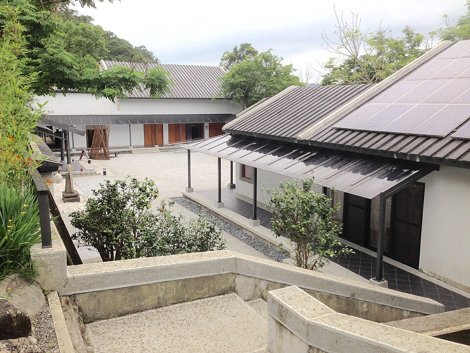
坪林(北宜公路休息站)
約 08:00 ・ 20 分
約 08:00 ・ 20 分
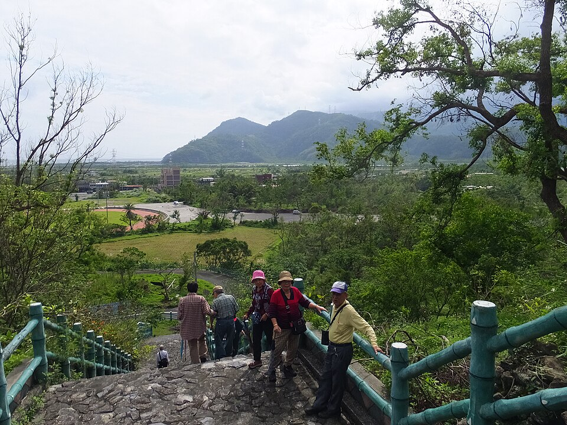
南澳(蘇花前補給站)
約 10:30 ・ 20 分
約 10:30 ・ 20 分
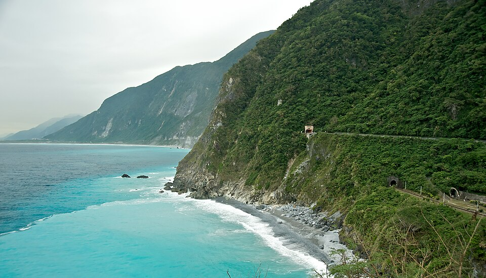
清水斷崖
約 11:30 ・ 30 分
約 11:30 ・ 30 分
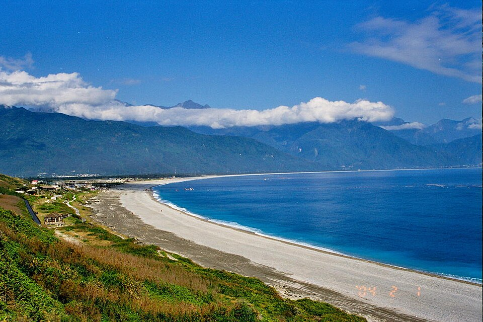
七星潭
約 13:00 ・ 40 分(含午餐)
約 13:00 ・ 40 分(含午餐)
玉里麵
約 14:45 ・ 30 分
約 14:45 ・ 30 分

富里稻草藝術景觀區
約 15:45 ・ 20 分
約 15:45 ・ 20 分
池上伯朗大道
約 16:35 ・ 20 分
約 16:35 ・ 20 分
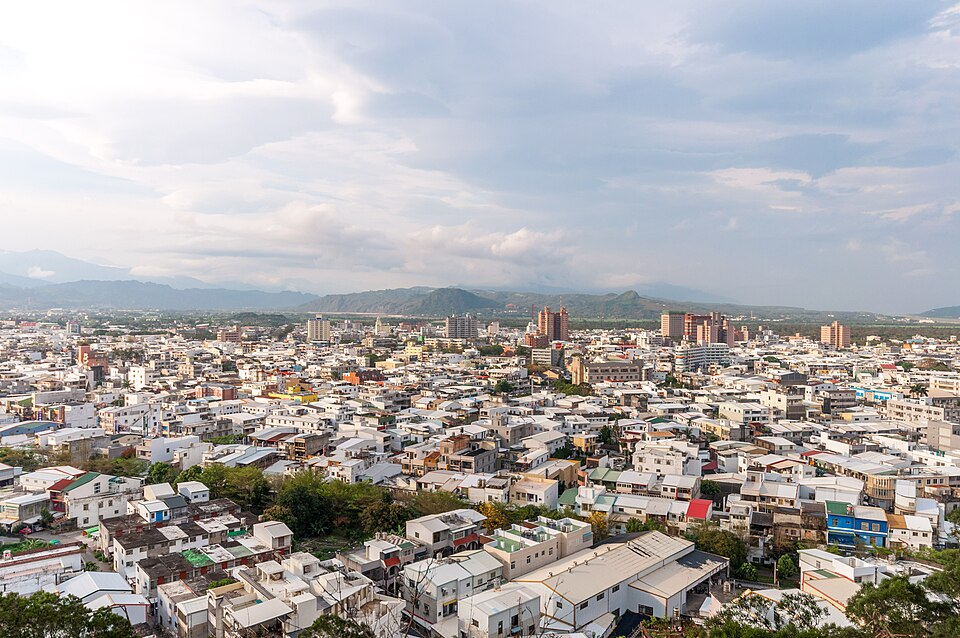
台東住宿
約 18:20 入住 ・ 過夜
約 18:20 入住 ・ 過夜

鐵花新聚落
約 19:20 ・ 90 分(晚餐加逛逛)
約 19:20 ・ 90 分(晚餐加逛逛)
Day 2 ・ 11/15(日) ・ 台東 → 羅東
台 11 線海岸 → 花蓮 → 蘇花 → 羅東,約 330 km,建議 07:30 出發;東海岸景點多,時間不夠時小野柳、東河包子、親不知子、芭崎可跳過
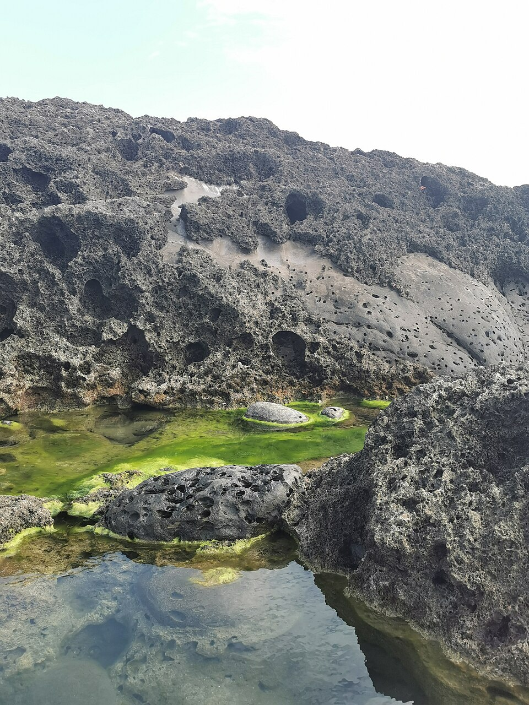
小野柳
約 07:45 ・ 20 分
約 07:45 ・ 20 分
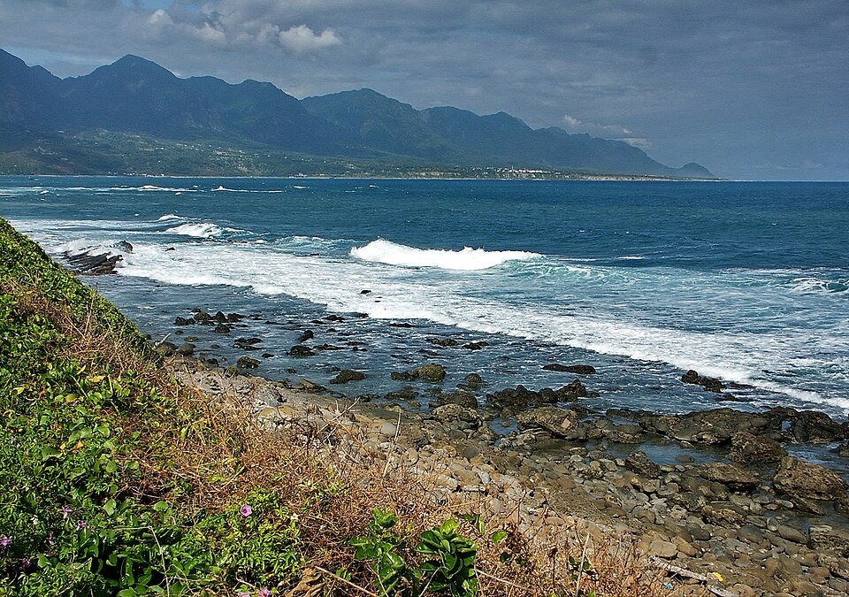
加路蘭
約 08:15 ・ 15 分
約 08:15 ・ 15 分
東河包子
約 08:30 ・ 15 分
約 08:30 ・ 15 分
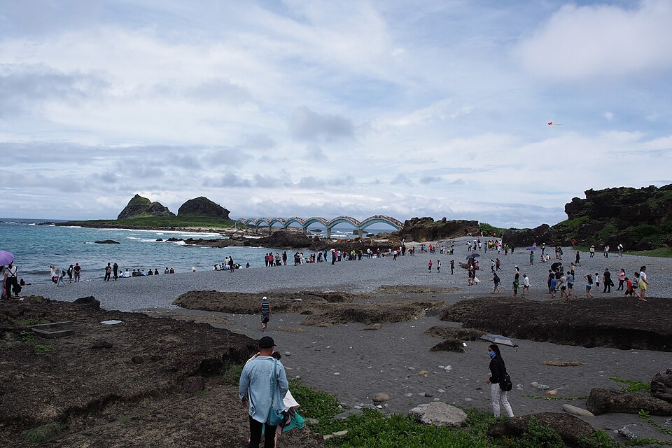
三仙台
約 09:05 ・ 30 分
約 09:05 ・ 30 分
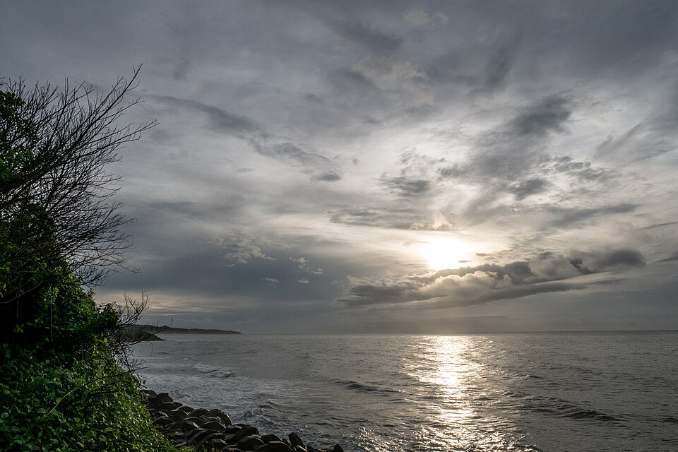
親不知子天空步道
約 09:55 ・ 20 分
約 09:55 ・ 20 分
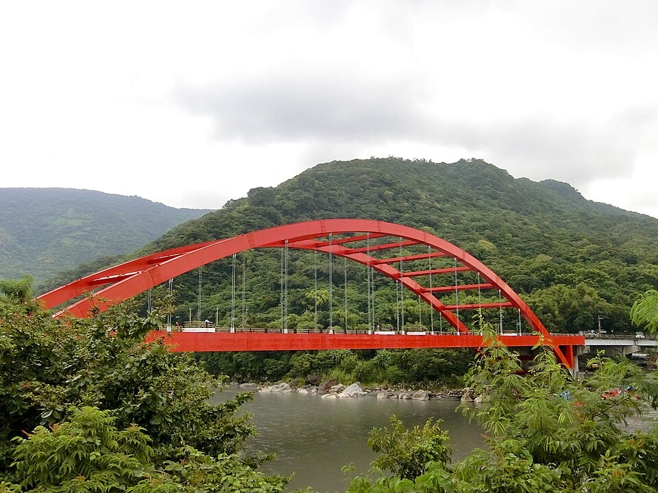
長虹橋(秀姑巒溪出海口)
約 10:35 ・ 10 分
約 10:35 ・ 10 分
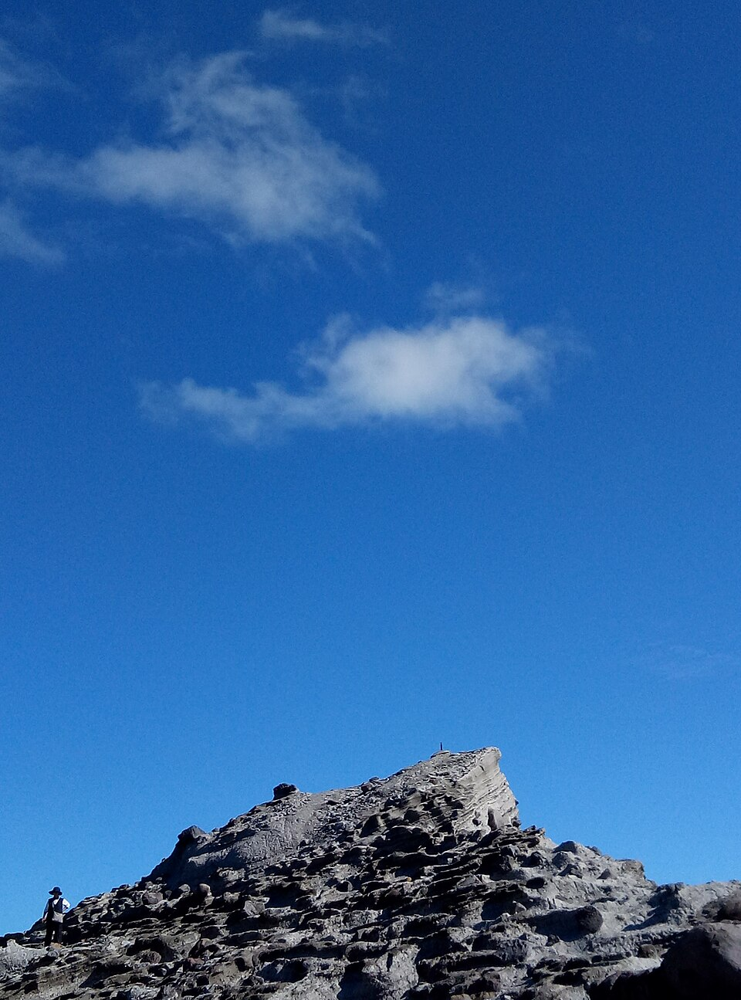
石梯坪
約 11:00 ・ 20 分
約 11:00 ・ 20 分

芭崎觀景台
約 11:55 ・ 15 分
約 11:55 ・ 15 分
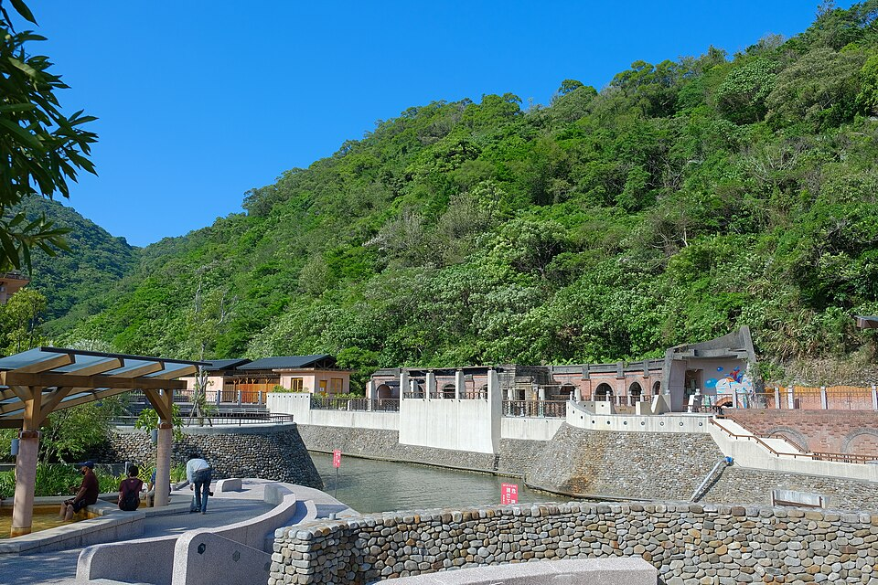
蘇澳冷泉
約 16:15 ・ 40 分
約 16:15 ・ 40 分
羅東住宿:Simple Room
約 17:30 入住 ・ 過夜
約 17:30 入住 ・ 過夜
羅東夜市逛逛
約 18:30 ・ 90 分(晚餐加逛逛)
約 18:30 ・ 90 分(晚餐加逛逛)
Day 3 ・ 11/16(一) ・ 羅東 → 北宜公路 → 台北內湖
羅東 → 礁溪 → 頭城 → 北宜公路 → 內湖,約 90 km
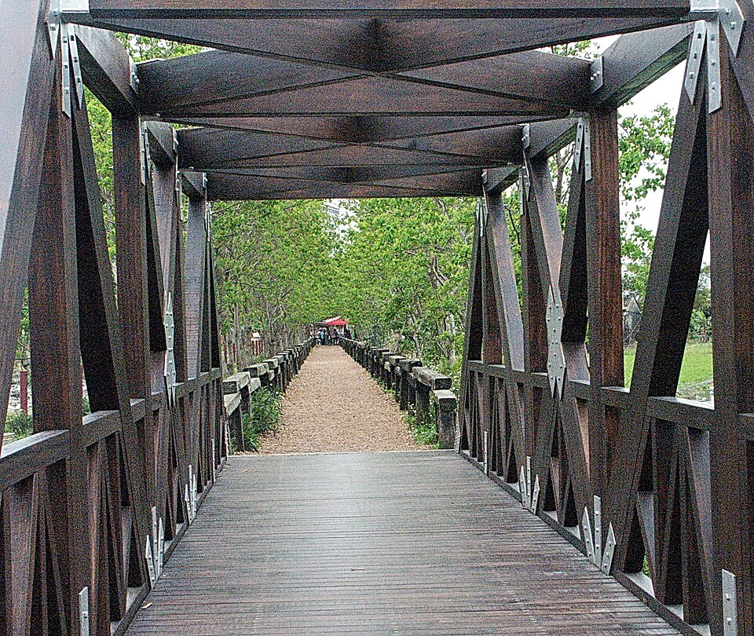
羅東林業文化園區
約 09:00 ・ 60 分
約 09:00 ・ 60 分
星巴克 羅東林場門市
約 10:00 ・ 30 分
約 10:00 ・ 30 分
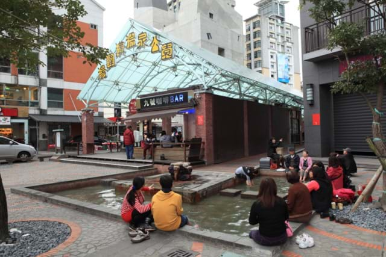
礁溪湯圍溝公園(泡腳)
約 11:00 ・ 40 分
約 11:00 ・ 40 分
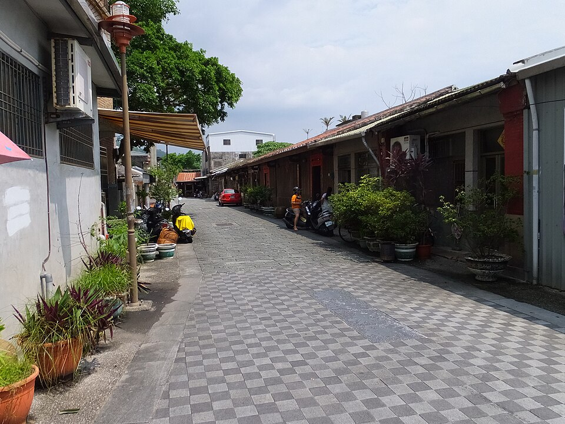
頭城老街
約 12:00 ・ 60 分(含午餐)
約 12:00 ・ 60 分(含午餐)
坪林(北宜公路休息站)
約 13:30 ・ 30 分
約 13:30 ・ 30 分
騎車前檢查清單
- 輪胎胎壓與胎紋、煞車、鏈條上油
- 雨衣、手套、保暖內層(山區與海邊 11 月偏涼)
- 公路局蘇花路況、中央氣象署天氣
- 兩晚住宿的機車停車位
一路平安・結婚 33 週年快樂 💕